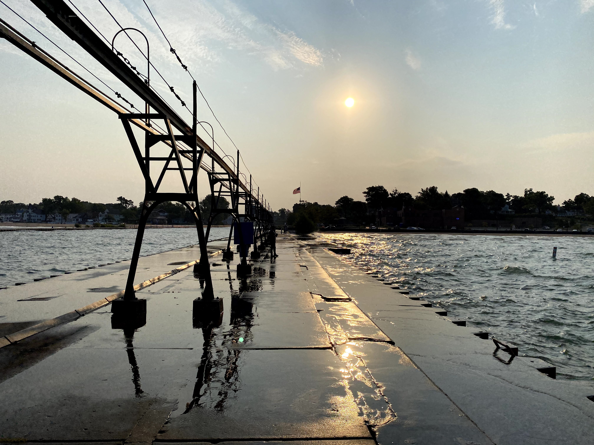

Where I grew up
David RocendoI was born in Florida to migrant parents. I was their first child; they were excited but also knew how difficult it would be to raise a child because of their work. Throughout my life and till this day they are Migrant Farm Worker. Living in different states was frustrating for me, as there was no place I could call home. I hated the noise of the highway as it repeated in my ear every time we moved. In my senior year of high school I had been to five different states and 15 different schools. My early life was tiring but I learn to enjoy the time I was with my family, they are my home as long as they are still around I will always have a place to come to. Of course, there will be a time where I have to make my own and I hope to make it a place where my friends and family can come and feel comfortable and a place where we can have fun. I always look forward to making friends, so if you just want to grab coffee sometime reach out to me, I would love to get to know each other. I love talking about tech, cars and love listening to music.